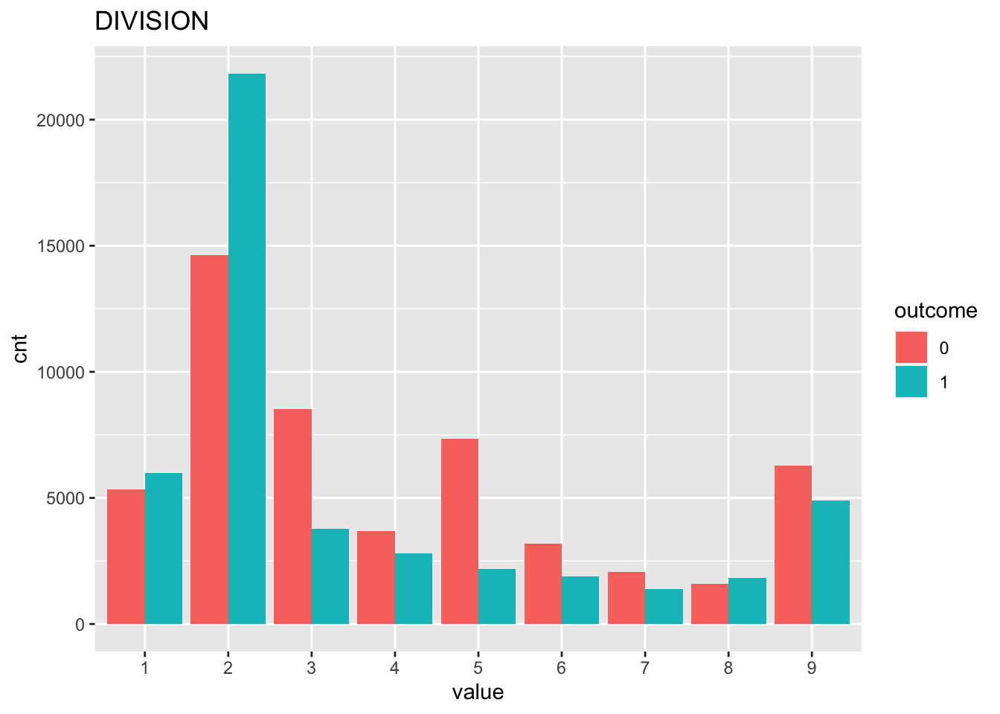
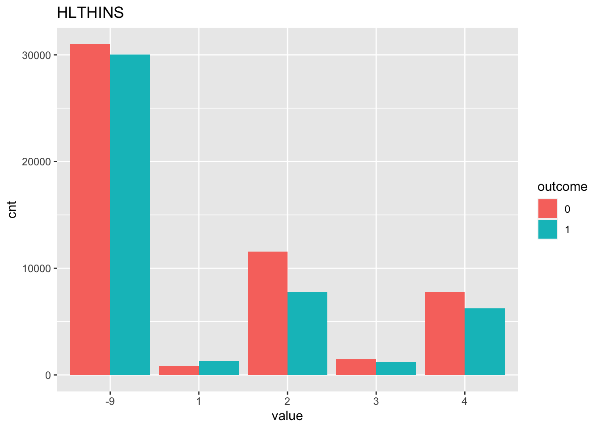
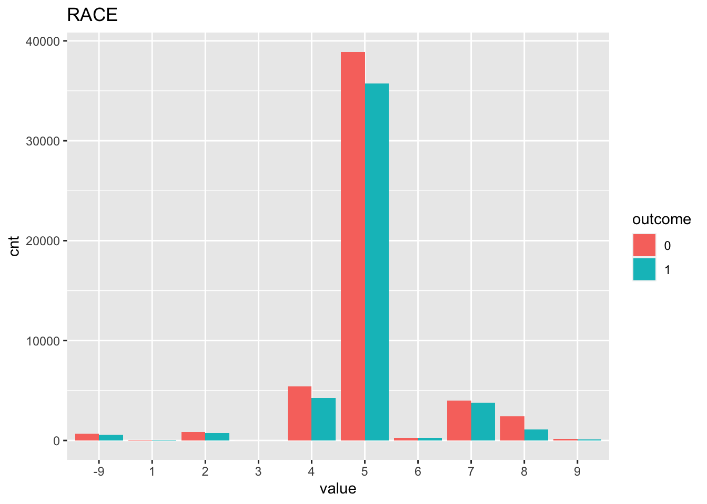
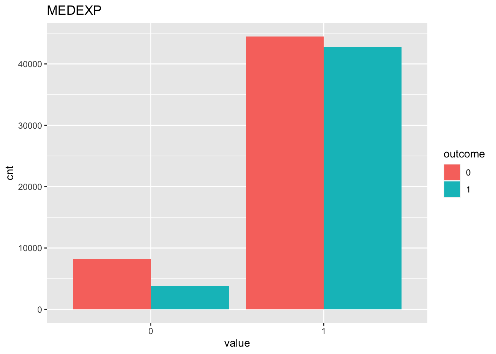
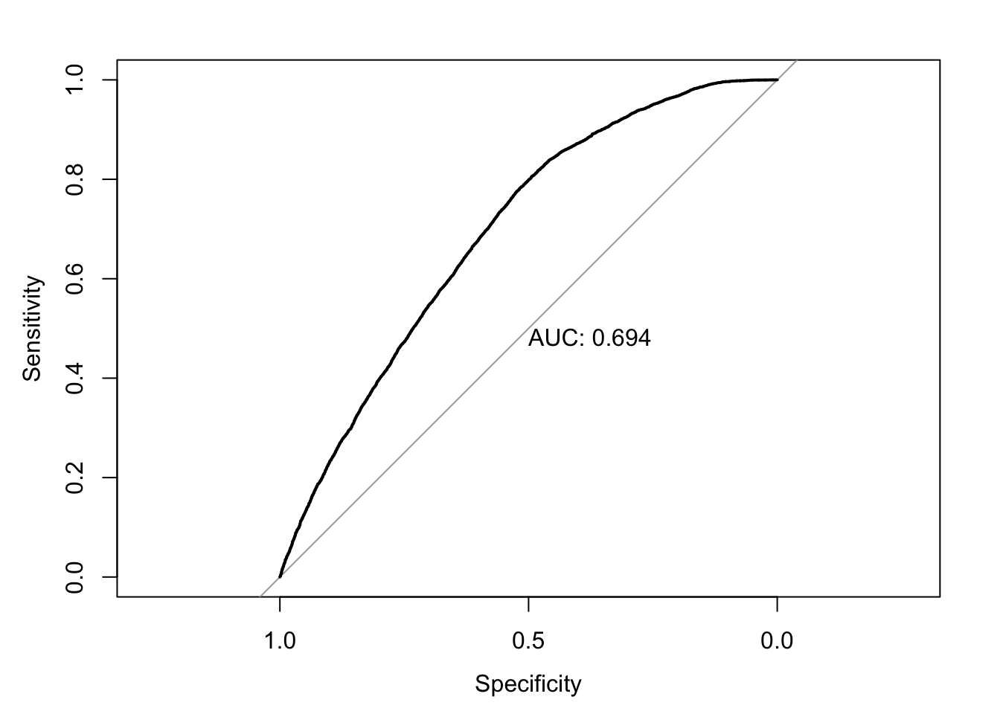
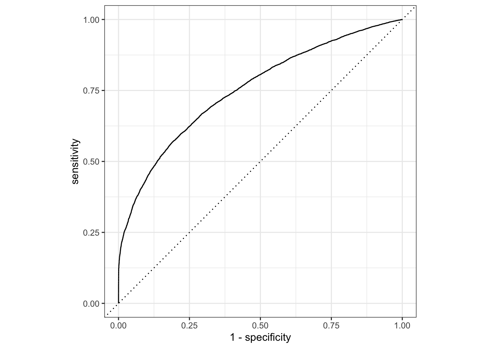
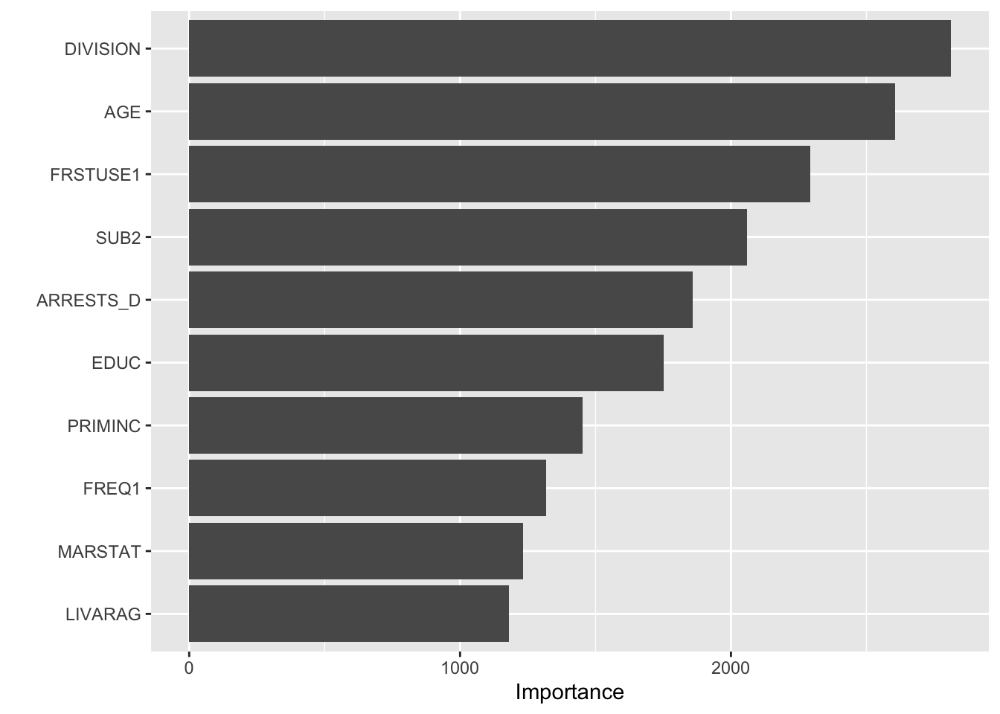

Last updated: 2020-12-18
Checks: 6 1
Knit directory: teds_ml/
This reproducible R Markdown analysis was created with workflowr (version 1.6.2). The Checks tab describes the reproducibility checks that were applied when the results were created. The Past versions tab lists the development history.
The R Markdown is untracked by Git. To know which version of the R Markdown file created these results, you’ll want to first commit it to the Git repo. If you’re still working on the analysis, you can ignore this warning. When you’re finished, you can run wflow_publish to commit the R Markdown file and build the HTML.
Great job! The global environment was empty. Objects defined in the global environment can affect the analysis in your R Markdown file in unknown ways. For reproduciblity it’s best to always run the code in an empty environment.
The command set.seed(20201124) was run prior to running the code in the R Markdown file. Setting a seed ensures that any results that rely on randomness, e.g. subsampling or permutations, are reproducible.
Great job! Recording the operating system, R version, and package versions is critical for reproducibility.
Nice! There were no cached chunks for this analysis, so you can be confident that you successfully produced the results during this run.
Great job! Using relative paths to the files within your workflowr project makes it easier to run your code on other machines.
Great! You are using Git for version control. Tracking code development and connecting the code version to the results is critical for reproducibility.
The results in this page were generated with repository version be9f492. See the Past versions tab to see a history of the changes made to the R Markdown and HTML files.
Note that you need to be careful to ensure that all relevant files for the analysis have been committed to Git prior to generating the results (you can use wflow_publish or wflow_git_commit). workflowr only checks the R Markdown file, but you know if there are other scripts or data files that it depends on. Below is the status of the Git repository when the results were generated:
Ignored files:
Ignored: .DS_Store
Ignored: .Rhistory
Ignored: analysis/.DS_Store
Untracked files:
Untracked: analysis/alc_completion_2017.Rmd
Untracked: analysis/cocaine_completion_2017.Rmd
Untracked: analysis/meth_completion_2017.Rmd
Untracked: analysis/mj_completion_2017.Rmd
Untracked: analysis/opioid_completion_2017_medicaid.Rmd
Untracked: data/.ipynb_checkpoints/
Untracked: data/TEDS-D-2007-DS0001-data-excel.tsv
Untracked: data/clean_data.ipynb
Untracked: data/expansion-status-interactive-map_10.1.20-2.csv
Untracked: data/medicaid_expansion.csv
Untracked: data/teds4aequitas.csv
Untracked: data/tedsa_puf_2017.csv
Untracked: data/tedsd_puf_2017.csv
Untracked: output/teds_predictions.csv
Unstaged changes:
Deleted: analysis/feature_exploration.Rmd
Modified: analysis/index.Rmd
Modified: analysis/opioid_completion_2017.Rmd
Note that any generated files, e.g. HTML, png, CSS, etc., are not included in this status report because it is ok for generated content to have uncommitted changes.
There are no past versions. Publish this analysis with wflow_publish() to start tracking its development.
Refer to the codebook for variable descriptions.
Response: Successful completion of short or long-term opioid treatment. Features: See myvars defined below.
mydata <- read.csv("data/tedsd_puf_2017.csv")
medexp <- read.csv("data/medicaid_expansion.csv")
# filter
mydata <- mydata %>% filter(SUB1 %in% c(5,6,7), SERVICES %in% c(4,5))
mydata$COMPLETED = ifelse(mydata$REASON==1, 1, 0) #create response variable
mydata <- merge(mydata, medexp, by='STFIPS')
myvars <- c("ROUTE1", "ALCFLG", "FREQ1", "FRSTUSE1", "IDU","COKEFLG", "BENZFLG", "PSYPROB", "HLTHINS", "PRIMPAY", "AGE", "GENDER", "LIVARAG", "DIVISION", "METHUSE", "NOPRIOR", "EDUC", "HERFLG","RACE","MARSTAT","PRIMINC","ETHNIC","ARRESTS_D", "MEDEXP", "SUB2")
response = "COMPLETED"
teds <- as.data.frame(lapply(mydata[myvars], factor))
teds[, response] = mydata[, response]First, we check to see if our classes are balanced.
table(teds[,response])
0 1
52644 46561 In this case it looks ok! Next, we can vizualize some (or all) of the relationships between the features and the response. Here we just look at 3 of the variables so it’s less chaotic.
sbs_response_plots(teds, c("DIVISION", "HLTHINS", "RACE", "MEDEXP"), response)
Next, split the data into training and testing sets, using 3/4 of the data for training and holding out 1/4 for testing.
set.seed(123) #for replicability
teds_split = initial_split(teds, prop=3/4)
# extract training and testing sets
teds_train <- training(teds_split)
teds_test <- testing(teds_split)Now, we fit a logistic regression model on our training data. We display the coefficients as well as the predictive performance on the test data.
fm <- as.formula(paste(response, "~ ."))
lg = glm(fm, family=binomial, data=teds_train)
summary(lg)
Call:
glm(formula = fm, family = binomial, data = teds_train)
Deviance Residuals:
Min 1Q Median 3Q Max
-2.2264 -1.1147 -0.3214 1.0647 2.9844
Coefficients:
Estimate Std. Error z value Pr(>|z|)
(Intercept) 0.33336 0.86511 0.385 0.699986
ROUTE11 0.05410 0.10742 0.504 0.614502
ROUTE12 0.27491 0.10834 2.537 0.011167 *
ROUTE13 0.09729 0.10419 0.934 0.350457
ROUTE14 0.25640 0.12245 2.094 0.036272 *
ROUTE15 -0.23259 0.12971 -1.793 0.072962 .
ALCFLG1 0.06447 0.03401 1.896 0.058017 .
FREQ11 -0.06002 0.03586 -1.674 0.094156 .
FREQ12 -0.15664 0.03598 -4.354 1.34e-05 ***
FREQ13 -0.24442 0.03166 -7.720 1.17e-14 ***
FRSTUSE11 -0.12244 0.13467 -0.909 0.363238
FRSTUSE12 0.01679 0.10311 0.163 0.870621
FRSTUSE13 0.01745 0.09947 0.175 0.860724
FRSTUSE14 0.09167 0.09892 0.927 0.354074
FRSTUSE15 0.07046 0.09907 0.711 0.476938
FRSTUSE16 0.09748 0.09947 0.980 0.327094
FRSTUSE17 0.15236 0.09980 1.527 0.126860
IDU0 -0.05587 0.03123 -1.789 0.073610 .
IDU1 -0.27686 0.06871 -4.030 5.59e-05 ***
COKEFLG1 -0.09576 0.03573 -2.680 0.007359 **
BENZFLG1 -0.06706 0.03913 -1.714 0.086552 .
PSYPROB1 -0.65970 0.04030 -16.369 < 2e-16 ***
PSYPROB2 -0.64417 0.03955 -16.288 < 2e-16 ***
HLTHINS1 0.30465 0.07580 4.019 5.84e-05 ***
HLTHINS2 -0.17507 0.03445 -5.082 3.74e-07 ***
HLTHINS3 -0.21540 0.05538 -3.889 0.000101 ***
HLTHINS4 -0.12489 0.03863 -3.233 0.001224 **
PRIMPAY1 -0.05336 0.08512 -0.627 0.530743
PRIMPAY2 0.18123 0.09179 1.974 0.048342 *
PRIMPAY3 -0.23354 0.18342 -1.273 0.202932
PRIMPAY4 -0.49412 0.03563 -13.870 < 2e-16 ***
PRIMPAY5 -0.23222 0.03545 -6.551 5.73e-11 ***
PRIMPAY6 -0.82923 0.10041 -8.259 < 2e-16 ***
PRIMPAY7 -0.20296 0.06275 -3.234 0.001220 **
AGE2 -0.21769 0.64584 -0.337 0.736072
AGE3 -0.20211 0.63531 -0.318 0.750388
AGE4 -0.20706 0.63412 -0.327 0.744027
AGE5 -0.14144 0.63401 -0.223 0.823462
AGE6 -0.15037 0.63409 -0.237 0.812551
AGE7 -0.14075 0.63428 -0.222 0.824391
AGE8 -0.12468 0.63466 -0.196 0.844262
AGE9 -0.05415 0.63482 -0.085 0.932018
AGE10 0.07844 0.63508 0.124 0.901699
AGE11 0.19791 0.63530 0.312 0.755398
AGE12 0.18415 0.64578 0.285 0.775518
GENDER1 -0.33807 0.56177 -0.602 0.547317
GENDER2 -0.35310 0.56186 -0.628 0.529710
LIVARAG1 -0.19847 0.06909 -2.873 0.004070 **
LIVARAG2 -0.12861 0.06872 -1.872 0.061273 .
LIVARAG3 -0.07378 0.06791 -1.086 0.277297
DIVISION2 0.05879 0.03525 1.668 0.095358 .
DIVISION3 -0.97884 0.03700 -26.455 < 2e-16 ***
DIVISION4 -0.89210 0.05217 -17.101 < 2e-16 ***
DIVISION5 -1.14655 0.04492 -25.523 < 2e-16 ***
DIVISION6 -0.74257 0.05323 -13.950 < 2e-16 ***
DIVISION7 -0.51462 0.06065 -8.485 < 2e-16 ***
DIVISION8 -0.17430 0.05455 -3.195 0.001396 **
DIVISION9 -0.19582 0.05899 -3.320 0.000901 ***
METHUSE1 -0.43284 0.04526 -9.564 < 2e-16 ***
METHUSE2 -0.38443 0.04180 -9.198 < 2e-16 ***
NOPRIOR0 -1.04171 0.05844 -17.826 < 2e-16 ***
NOPRIOR1 -1.02066 0.05681 -17.966 < 2e-16 ***
EDUC1 -0.40482 0.08049 -5.029 4.92e-07 ***
EDUC2 -0.19612 0.07440 -2.636 0.008389 **
EDUC3 -0.12082 0.07295 -1.656 0.097655 .
EDUC4 -0.05004 0.07415 -0.675 0.499744
EDUC5 -0.02251 0.08124 -0.277 0.781713
HERFLG1 -0.10451 0.03148 -3.320 0.000901 ***
RACE1 -0.17735 0.26720 -0.664 0.506865
RACE2 -0.15736 0.09749 -1.614 0.106498
RACE3 -0.41479 1.29929 -0.319 0.749541
RACE4 -0.14279 0.07908 -1.806 0.070976 .
RACE5 0.02245 0.07363 0.305 0.760415
RACE6 0.10500 0.13355 0.786 0.431750
RACE7 -0.16211 0.07897 -2.053 0.040103 *
RACE8 -0.27302 0.08645 -3.158 0.001587 **
RACE9 -0.41548 0.16761 -2.479 0.013180 *
MARSTAT1 -0.05998 0.05094 -1.177 0.239020
MARSTAT2 -0.07133 0.05777 -1.235 0.216951
MARSTAT3 -0.07105 0.06264 -1.134 0.256710
MARSTAT4 -0.05149 0.05677 -0.907 0.364431
PRIMINC1 0.48437 0.03987 12.149 < 2e-16 ***
PRIMINC2 0.10213 0.04349 2.348 0.018849 *
PRIMINC3 0.12177 0.06027 2.020 0.043347 *
PRIMINC4 0.29474 0.03859 7.637 2.22e-14 ***
PRIMINC5 0.22722 0.03278 6.931 4.18e-12 ***
ETHNIC1 0.04954 0.06397 0.774 0.438747
ETHNIC2 0.03400 0.07319 0.465 0.642276
ETHNIC3 0.17552 0.07329 2.395 0.016625 *
ETHNIC4 0.15796 0.05168 3.056 0.002242 **
ETHNIC5 0.02217 0.07785 0.285 0.775786
ARRESTS_D0 2.63369 0.06912 38.105 < 2e-16 ***
ARRESTS_D1 2.16658 0.07973 27.176 < 2e-16 ***
ARRESTS_D2 2.17213 0.11456 18.961 < 2e-16 ***
MEDEXP1 -0.09201 0.03632 -2.533 0.011312 *
SUB21 0.25377 0.07326 3.464 0.000532 ***
SUB22 0.21177 0.08341 2.539 0.011120 *
SUB23 0.22542 0.08126 2.774 0.005533 **
SUB24 0.16126 0.07578 2.128 0.033326 *
SUB25 0.39511 0.10182 3.881 0.000104 ***
SUB26 -0.23718 0.15851 -1.496 0.134570
SUB27 0.16773 0.07936 2.114 0.034554 *
SUB28 0.24361 0.22347 1.090 0.275655
SUB29 0.20572 0.25159 0.818 0.413546
SUB210 0.19672 0.07529 2.613 0.008977 **
SUB211 0.20807 0.12435 1.673 0.094287 .
SUB212 0.04124 0.15744 0.262 0.793375
SUB213 0.26798 0.08588 3.120 0.001807 **
SUB214 0.50386 0.49306 1.022 0.306822
SUB215 0.05156 0.24779 0.208 0.835177
SUB216 -0.25553 0.13805 -1.851 0.064175 .
SUB217 -0.12515 0.75398 -0.166 0.868164
SUB218 -0.18955 0.37641 -0.504 0.614565
SUB219 0.25131 0.12526 2.006 0.044820 *
---
Signif. codes: 0 '***' 0.001 '**' 0.01 '*' 0.05 '.' 0.1 ' ' 1
(Dispersion parameter for binomial family taken to be 1)
Null deviance: 102885 on 74403 degrees of freedom
Residual deviance: 92635 on 74290 degrees of freedom
AIC: 92863
Number of Fisher Scoring iterations: 5test_prob = predict(lg, newdata = teds_test, type = "response")
test_roc = roc(teds_test$COMPLETED ~ test_prob, plot = TRUE, print.auc = TRUE)
For this experiment, our baseline AUC using logistic regression is 0.69.
Next, we fit a random forest model to the same training data. We are just using the default parameterizations here; previous experimentation showed that there wasn’t much variance across parameters, so I’m comfortable doing this for these experiments.
rf <- teds_rf(teds, myvars, response)The rf_cv object returned includes 4 things: the model specification, the test performance, and the test predictions. First we look at the test performance:
rf$test_performance# A tibble: 2 x 3
.metric .estimator .estimate
<chr> <chr> <dbl>
1 accuracy binary 0.685
2 roc_auc binary 0.754In this case, we see that the AUC=0.742 on the test set, an improvement over the logistic regression. We can use the test predictions to generate the ROC curve:
# plot roc cruve
autoplot(roc_curve(rf$test_predictions, !!response, .pred_0))
Finally, we compute and visualize the feature importances.
teds[,response] = as.factor(teds[[response]])
final_model <- fit(rf$model, teds)
final_model %>%
pull_workflow_fit() %>%
vip()
sessionInfo()R version 4.0.0 (2020-04-24)
Platform: x86_64-apple-darwin17.0 (64-bit)
Running under: macOS 10.16
Matrix products: default
BLAS: /Library/Frameworks/R.framework/Versions/4.0/Resources/lib/libRblas.dylib
LAPACK: /Library/Frameworks/R.framework/Versions/4.0/Resources/lib/libRlapack.dylib
locale:
[1] en_US.UTF-8/en_US.UTF-8/en_US.UTF-8/C/en_US.UTF-8/en_US.UTF-8
attached base packages:
[1] stats graphics grDevices utils datasets methods base
other attached packages:
[1] gridExtra_2.3 reshape2_1.4.4 vip_0.2.2 pROC_1.16.2
[5] yardstick_0.0.7 workflows_0.2.1 tune_0.1.1 rsample_0.0.8
[9] recipes_0.1.14 parsnip_0.1.4 modeldata_0.1.0 infer_0.5.3
[13] dials_0.0.9 scales_1.1.1 broom_0.7.2 tidymodels_0.1.1
[17] forcats_0.5.0 stringr_1.4.0 dplyr_1.0.2 purrr_0.3.4
[21] readr_1.3.1 tidyr_1.1.2 tibble_3.0.4 ggplot2_3.3.2
[25] tidyverse_1.3.0 workflowr_1.6.2
loaded via a namespace (and not attached):
[1] colorspace_1.4-1 ellipsis_0.3.1 class_7.3-16 rprojroot_1.3-2
[5] fs_1.4.1 rstudioapi_0.11 listenv_0.8.0 furrr_0.2.1
[9] farver_2.0.3 prodlim_2019.11.13 fansi_0.4.1 lubridate_1.7.8
[13] ranger_0.12.1 xml2_1.3.2 codetools_0.2-16 splines_4.0.0
[17] knitr_1.28 jsonlite_1.6.1 dbplyr_1.4.3 compiler_4.0.0
[21] httr_1.4.1 backports_1.1.8 assertthat_0.2.1 Matrix_1.2-18
[25] cli_2.0.2 later_1.1.0.1 htmltools_0.4.0 tools_4.0.0
[29] gtable_0.3.0 glue_1.4.1 Rcpp_1.0.4.6 cellranger_1.1.0
[33] DiceDesign_1.8-1 vctrs_0.3.4 iterators_1.0.12 timeDate_3043.102
[37] gower_0.2.1 xfun_0.13 globals_0.13.1 rvest_0.3.5
[41] lifecycle_0.2.0 future_1.19.1 MASS_7.3-51.5 ipred_0.9-9
[45] hms_0.5.3 promises_1.1.1 parallel_4.0.0 yaml_2.2.1
[49] rpart_4.1-15 stringi_1.4.6 foreach_1.5.0 lhs_1.0.2
[53] hardhat_0.1.4 lava_1.6.7 rlang_0.4.8 pkgconfig_2.0.3
[57] evaluate_0.14 lattice_0.20-41 labeling_0.3 tidyselect_1.1.0
[61] plyr_1.8.6 magrittr_1.5 R6_2.4.1 generics_0.0.2
[65] DBI_1.1.0 pillar_1.4.4 haven_2.2.0 withr_2.2.0
[69] survival_3.1-12 nnet_7.3-14 modelr_0.1.8 crayon_1.3.4
[73] utf8_1.1.4 rmarkdown_2.1 grid_4.0.0 readxl_1.3.1
[77] git2r_0.27.1 reprex_0.3.0 digest_0.6.25 httpuv_1.5.4
[81] GPfit_1.0-8 munsell_0.5.0